Private presentation preview. Saved result verified; R3 fresh solve verified; All six negative controls rejected
Input snapshot: mcl_s0_to_v_presentation_inputs_r3_v1@2026-10-05T03:57:54.309662+00:00. Input version: ithaca_city_aoi_intersection_2020_midday_r2; frozen configuration SHA-256 11c6f1ca1fbf09517251fb399cc7bbef9f258d2d483a111b34482cd3a01f4226.
Scope and model instance
Ithaca uses a midday local-activity scenario, not the morning HBW purpose used by the other cases. Its declared period is Monday 5 October 2026, 11:00–12:00, and its purpose code is HBO_LOCAL_ACTIVITY. The demand area is the 7.501778 km² City portion inside the earlier research union. A 13.235585 km² road-support area supplies surrounding paths without adding its non-City residents to demand.
The earlier union combines an 8.193 km² campus-neighbor core and a 7.984 km² downtown-access corridor. These overlapping rectangles were chosen for source coverage and connectivity before assignment. Cornell's Ithaca campus and the October 2025 campus map establish geographic context, not a property boundary. Cornell Tech in New York City is unrelated to this case.
Eleven populated tract groups provide the demand zones; a zero-population intersecting tract is explicitly excluded. Source coordinates are WGS84; the earlier input preparation uses EPSG:32618. The aligned maps explicitly reproject the saved WGS84 road geometry into EPSG:26918 and label their local metric origin. The exercise combines earlier source checks with a new static four-stage calculation. It makes no institutional endorsement, causal, health, safety or emissions claim.
Inputs and preparation
The demand denominator is an area-allocated estimate of 27,797.946 residents from 2020 City block data. The bounded service query returned 371 blocks, of which 369 intersect the research union. Block coverage reaches 99.76% of the City portion, which comprises 56.7% of the union. Whole contained blocks contribute their counts and boundary-cut blocks contribute overlap fractions; the analogous housing estimate is 10,361.966 occupied units.
These figures must not be confused with whole-tract counts. Thirteen tracts touch the broader union, and their complete populations and occupied units total 50,087 and 19,517 respectively. A previous coarse tract-area estimate of 22,354.75 residents for the union was superseded as the lead figure when finer block evidence exposed its inconsistency. The uncovered Cornell/Town portion does not acquire a block estimate by extrapolation.
Twenty-six ACS2024 block-group geometries were retrieved, but they supplied no 2024 population values. The original model did not compile employment. Attractions instead use 1,127 OSM amenity, shop, office, tourism, leisure or healthcare objects plus an explicit one-unit floor per zone. They represent activity opportunities rather than jobs; later employment evidence does not retroactively change this generation input.
Four OSM tiles contain 109,240 raw nodes and 5,761 highway ways before selection. The clipped source graph has 20,928 nodes and 24,420 segments, including 175 boundary-truncated segments; their selected lengths sum to 398,894.127 m. An undirected audit retains 26 components, with 20,682 nodes in the largest. Source length and component counts are geography checks, not traffic capacity or travel benefits.
The preflight distinguishes 12,938 footways, 453 cycleways and 243 steps segments, and preserves bridge, tunnel, layer, access, one-way and mode tags. Its draft exchange comprises 13 zones and 45,361 source-crosswalk rows as well as the node/link tables. Nine restriction relations seen in the source were not applied to that draft. The separate four-stage road graph encodes applicable passenger-car transitions; the two graph products must not be conflated.
TCAT feed version 20260922 provides a selected service day of 5 October 2026. Parsing its calendars and timetable gives one active service identifier, 836 trips, 24 routes and 168 stops in the union, of which 163 appear in active stop times. These are schedule facts rather than observed bus positions. The raw feed remains excluded under unresolved redistribution terms.
Other City layers describe 1,641 sidewalk polygons, 75 trails or footpaths and 86 one-way-street lines. Sidewalk polygons do not define legal pedestrian centerlines, and the one-way layer lacks the direction attribute needed to infer direction from vertex order. Five USGS elevation samples at candidate crossings cannot establish a path slope. These sources cover the municipal area and do not certify stop access across the whole union.
Retained physical road graph

Description, units and scope
15,148 retained physical directed traversals in the saved 11:00–12:00 local activity model, shown in EPSG:26918. This is the retained model graph, not a claim to draw every road in the source archive. Virtual movements are excluded; colour has no traffic meaning. © OpenStreetMap contributors / ODbL. Reciprocal directed arcs can share geometry; no assigned flow is encoded. This drawing uses the frozen run_20261005 evidence. Later supplementary datasets are separate and are not implied to have entered this scenario.
PNG · SVG · PDF · Source record

Population and household inputs

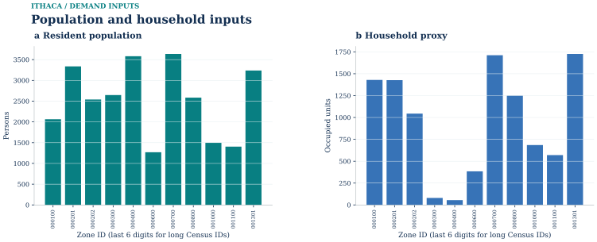
Description, units and scope
Saved clipped-zone demographic allocation; not a campus census. All 11 zones are retained; population total 27,797.9. Occupied units total 10,362. Missing household fields are unknown, not zero. Census/ACS allocation is an input, not a simulated traffic quantity. This drawing uses the frozen run_20261005 evidence. Later supplementary datasets are separate and are not implied to have entered this scenario.
PNG · SVG · PDF · Source record

Transit source geography

Description, units and scope
TCAT stops / 2026-10-05 service-day flags. Service-day flags do not certify pedestrian access or observed ridership. The gray retained road graph is geographic context, not a transit route model. Source stops and route shapes do not establish legal pedestrian access, operating service, or observed ridership. This drawing uses the frozen run_20261005 evidence. Later supplementary datasets are separate and are not implied to have entered this scenario.
PNG · SVG · PDF · Source record

01 / Trip generation
The production rule multiplies allocated population by an assumed 0.8 local-activity person trips per person per day and an 0.08 share for the midday hour. It generates 1,779.068516672 person trips. The declared capture and intrazonal rules separate 622.673980835 external or uncaptured trips and 138.767344300 intrazonal trips, leaving 1,017.627191536 internal interzonal productions.
Activity-object weights allocate attractions before normalization to the production margin. The rates, temporal fraction, capture, utility terms and road parameters are engineering assumptions. The generation chart displays saved model quantities and the full zonal file keeps the underlying values; neither is a count of Cornell journeys.
Trip generation and demand accounting

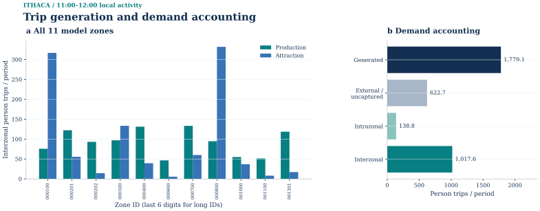
Description, units and scope
All 11 zones; 11:00–12:00 local activity. The left panel shows saved interzonal productions/attractions. The right panel accounts for all generated persons, including excluded and intrazonal components. No top-12 truncation. Scenario assumptions, not measured trip counts. External and intrazonal components do not enter interzonal assignment; attractions are normalized to productions. This drawing uses the frozen run_20261005 evidence. Later supplementary datasets are separate and are not implied to have entered this scenario.
PNG · SVG · PDF · Source record

02 / Trip distribution
Directed drive times on the turn-expanded network provide the impedance used by the exponential gravity model. IPF processes the complete positive feasible zone-pair set. Seven iterations leave a maximum margin error of 9.870046824×10⁻⁸ persons.
A single PA-to-OD conversion allocates 60% forward and 40% reverse, producing 110 positive directed pairs and conserving 1,017.627191536 persons. No pair is selected merely to keep a small demonstration. Unreachable cells would remain structural zeros; a positive unreachable margin would fail the model instead of receiving an invented finite cost. The log(1 + trips) heatmap is indexed demand, not a geographic map.
Trip distribution and directed OD margins

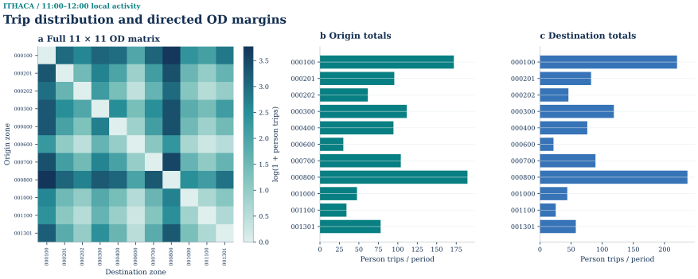
Description, units and scope
Full 11×11 model-zone matrix including zero cells; 110 positive OD pairs and 1,017.627191536 persons in 11:00–12:00 local activity. Colours are log(1+persons); margins are untransformed directed OD totals after PA direction. Every model zone is retained. Zero rows and columns remain visible; intrazonal cells are structural zeros. Labels use the final six digits of long zone IDs. This drawing uses the frozen run_20261005 evidence. Later supplementary datasets are separate and are not implied to have entered this scenario.
PNG · SVG · PDF · Source record

03 / Mode choice
The OD model compares routed drive and walk costs with a direct TCAT service approximation from the frozen timetable. Four sample departure ticks and approximate walk-stop snaps produce transit availability for 98 pairs. A 45-minute walking threshold leaves walking available for 108 of the 110 pairs.
Saved aggregate demand is approximately 547.640 drive, 172.911 transit and 297.077 walk persons. Every modeled person has an available option. The USD 1.50 transit fare comes from the frozen fare table; USD 2 parking, USD 15/hour value of time, zero alternative constants and occupancy 1.3 are assumed. Transit has no transfers or reliability adjustment and is not validated against boardings.
Driving converts once to 421.261325634 PCE for the hour. Walking and transit remain person-trip outputs without their own capacity assignment. These conditional utilities explain modeled differences between alternatives; they are not estimates of observed modal shares.
Mode choice: demand, cost and availability

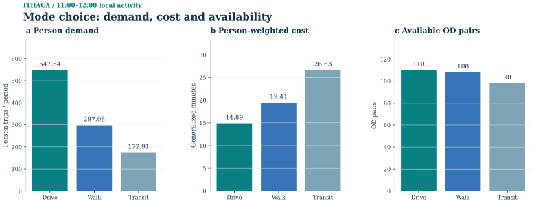
Description, units and scope
Saved OD-specific choice in 11:00–12:00 local activity; sums over every positive-demand OD. Persons, person-weighted generalized minutes, and available OD counts have separate axes. Transit is included only where saved as available. Generalized cost includes model time and money terms. Person totals precede the separate occupancy-to-PCE conversion. This drawing uses the frozen run_20261005 evidence. Later supplementary datasets are separate and are not implied to have entered this scenario.
PNG · SVG · PDF · Source record

04 / Physical-link assignment
The road representation contains 15,148 physical directed links, plus separate turn and zone-access arcs. Shared OSM topology, rather than intersecting lines in a drawing, defines connections. Each zone access point is an existing public-road node in the same tract. That choice supports a tract-level model but does not audit building entrances or every lawful movement.
All 110 positive vehicle OD pairs reach assignment. The first all-or-nothing loading meets the frozen 10⁻⁴ gap threshold, with a reported gap of zero, objective 1,638.731757686 PCE-min and no FW updates. Maximum node-balance residual is about 4.26×10⁻¹⁴ PCE. This numerical stop does not demonstrate that actual midday traffic is uncongested.
The original top-link and loading-detail charts retain physical roads only; their full table includes every physical link. The maximum modeled physical v/c is 0.1126. The R3 spatial companion joins the same saved flow to the frozen original two-point OSM segments, whose identity S0 checked. It supplies the missing geographical assignment view without recomputing traffic or drawing virtual movements as roads.
Frank–Wolfe: physical-road loading

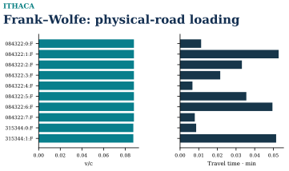
Description, units and scope
v/c and BPR travel time for top 10 loaded physical road links; turn/access connectors excluded; v/c>1 is allowed in static BPR. Single-pass engineering scenario; no local empirical calibration. City demand area 7.50 km2; 13.24 km2 road support
PNG · SVG · PDF · Source record

Frank–Wolfe: physical flow and distribution

Description, units and scope
Saved Ithaca static Frank–Wolfe endpoint for 11:00–12:00 local activity. The map and 22-bin histogram use the same complete 15,148-link physical-flow vector, including 12,789 exact-zero links; 2,359 links exceed 1e-6 PCE. Flow is PCE accumulated during the declared one-hour period, not persons or flow per simulation time step. The map uses a square-root sequential color scale with original-unit ticks and gray road context; histogram counts are linear and no links are omitted. Turn, access and other nonphysical solver arcs are excluded. Only the saved iteration-0 initialization exists; FW performed zero subsequent updates. Reciprocal directed arcs may overlap geometrically; flows are not summed. This is a modeled engineering scenario, not observed traffic. © OpenStreetMap contributors / ODbL 1.0. R11 layout repair: map and all-link histogram share measured top and bottom panel bounds. The original saved physical-link IDs, exact flow vector, geographic vertices, display offsets, histogram edges and counts remain unchanged.
PNG · SVG · PDF · Source record

Saved initial checks and original endpoint views
Saved results and assignment checks
S0 R3 passed saved-result replay, a fresh four-stage run from the frozen inputs, saved-versus-fresh table comparison and six negative controls. These checks extend the earlier producer validation, which tested receipt continuity, boundary arithmetic, OD balance, mode availability and probabilities, PCE conversion and path/link reconstruction.
Earlier preflight work also reproduced source summaries in a fresh path containing spaces and Chinese characters. The subsequent City GIS replay matched five output tables and its summary. Separate S2 replay and negative tests addressed broken link references, missing hashes, unordered points used as paths, changed parent or weight records and missing current outputs. Such source and interface tests are distinct from the accepted four-stage solve.
Saved initial checks and original endpoint views
Frank–Wolfe: the saved initial check

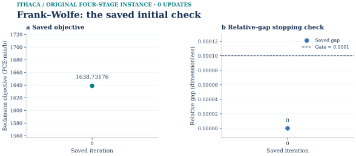
Only the actual saved iteration 0 is shown: objective 1638.7317576864 PCE·min/h and relative gap 0, against the unchanged 0.0001 stopping gate. There were zero updates. Each panel contains a single numerical point; no missing trajectory or second state is inferred. The companion physical-flow map reads this method’s own saved vector. This frozen original demand instance is not relabelled as a later selected-demand or transit-revision run.
SVG · PNG · PDF · Source data

Static assignment: demand margins and physical endpoints
Static assignment demand margins

Complete evidence · same figure · SVG · PNG · PDF · Plot data · Source record · Caption

Physical demand endpoints

Complete evidence · same figure · SVG · PNG · PDF · Plot data · Source record · Caption

Finite-path reference and physical support

Complete evidence · same figure · SVG · PNG · PDF · Plot data · Source record · Caption

Native L3 physical flows against same-instance FW

Complete evidence · same figure · SVG · PNG · PDF · Plot data · Source record · Caption

Static assignment: method-specific physical flow
Finite-path reference and physical support
Complete evidence · same figure · SVG · PNG · PDF · Plot data · Source record · Caption
Native L3 physical flows against same-instance FW
Complete evidence · same figure · SVG · PNG · PDF · Plot data · Source record · Caption
Time-expanded network and path examples
Time-expanded network in layers

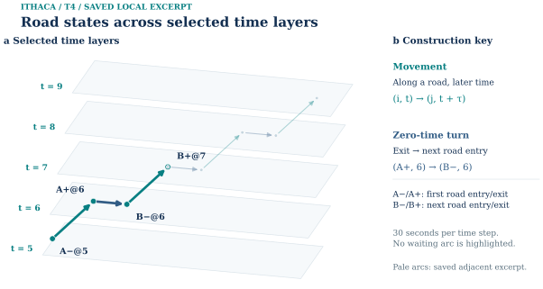
Complete evidence · same figure · SVG · PNG · PDF · Plot data · Source record · Caption

Local construction details

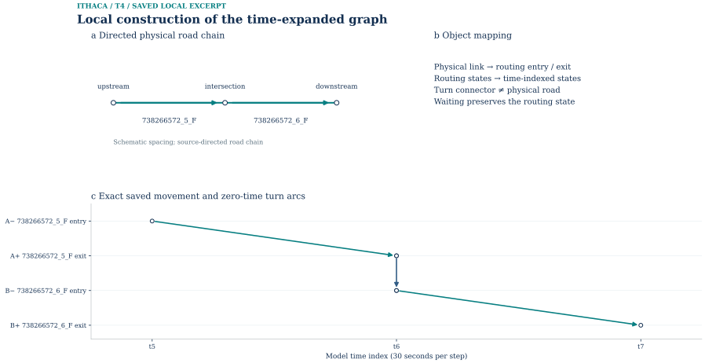
Complete evidence · same figure · SVG · PNG · PDF · Plot data · Source record · Caption

Optimization on the time-expanded network
Phase I: artificial-flow clearance

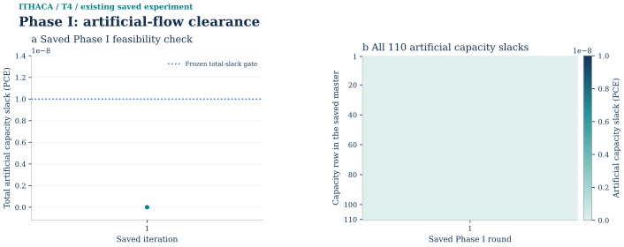
Complete evidence · same figure · SVG · PNG · PDF · Plot data · Source record · Caption

Phase II objective

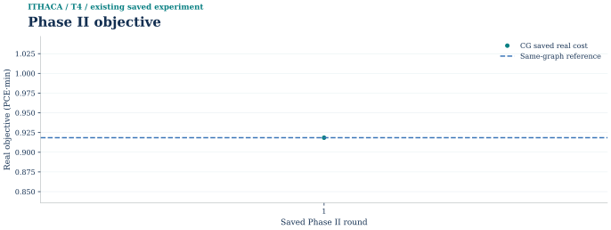
Complete evidence · same figure · SVG · PNG · PDF · Plot data · Source record · Caption

Independent pricing closure

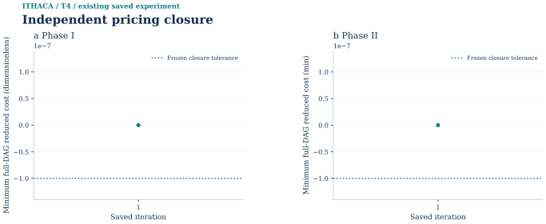
Complete evidence · same figure · SVG · PNG · PDF · Plot data · Source record · Caption

Lagrangian bounds and certified gap

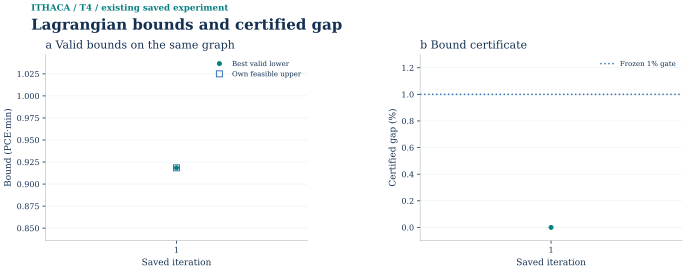
Complete evidence · same figure · SVG · PNG · PDF · Plot data · Source record · Caption

Capacity prices at the best dual bound

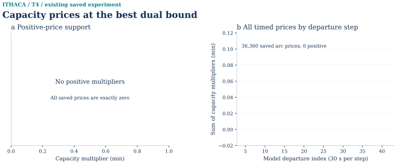
Complete evidence · same figure · SVG · PNG · PDF · Plot data · Source record · Caption

Path-pool growth and primal recovery

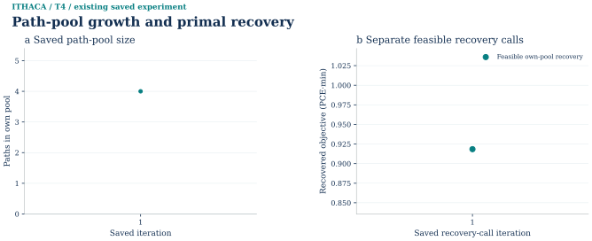
Complete evidence · same figure · SVG · PNG · PDF · Plot data · Source record · Caption

ADMM convergence and feasibility

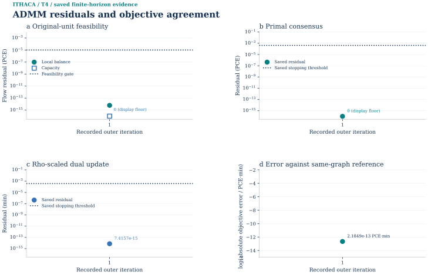
Complete evidence · same figure · SVG · PNG · PDF · Plot data · Source record

Commodity conservation at the final state

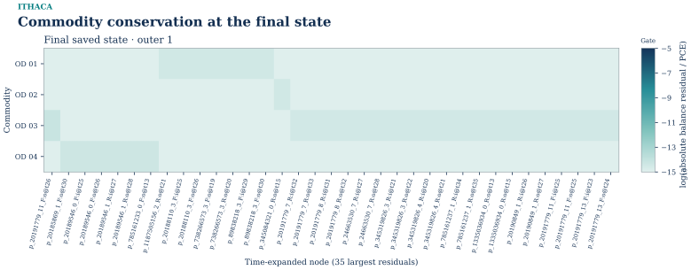
Complete evidence · same figure · SVG · PNG · PDF · Plot data · Source record · Caption

ADMM and arc-flow LP: physical-link flow

Complete evidence · same figure · SVG · PNG · PDF · Plot data · Source record · Caption

Reproduction and input identity
The public reproducibility archive is not yet available.
Producer stage receipts: Python 3.11.4; PYTHONDONTWRITEBYTECODE=1.
Runtime versions above are recorded producer facts. The V presentation task does not replace or upgrade the frozen numerical environment.
Model limits and observations
The model is one static forward pass using 2020 residents and 2026 OSM/GTFS, with uncalibrated rates, prices, speed and capacity assumptions. Assigned costs are not iterated back into generation, distribution or mode choice. No parcel-access audit, comprehensive pedestrian movement audit or observed traffic calibration is included.
The displayed source figures follow the approved public asset boundary. Raw City GIS, raw TCAT, personal traces and the historical photograph are not included in this preview.
A valid new visual does not authorize a different purpose or time period. HBO_LOCAL_ACTIVITY at 11:00–12:00, the separate demand and support areas, activity proxies and source vintages remain visible wherever the result is presented. Map-derived displays retain © OpenStreetMap contributors and ODbL attribution.
The bounded OSM trackpoint request yielded 5,000 points in four API segments. One five-point segment has increasing time and was classed ORDERED_TRACE; the remaining 4,995 points have duplicate times and were classed ORDERED_NO_TIME. OSM privacy handling can affect order, so even the timed segment is not automatically a recovered trip. Exact traces and timestamps remain private, and travel mode is unknown.
No topology-aware matching output was produced for that sample. It cannot establish motor journeys, speeds from untimed segments, total trip volume or sampling penetration. A later matcher would need explicit radius and gap rules, directed connectivity and turn checks, and an account of unmatched portions.
Historical crossing imagery provides context only. No current marking, lane count, legal movement, georeferencing or safety condition follows from the dated imagery; the image itself is not included in the preview.
The earlier S2 exercise covers eight objects: five crossing points, two clipped lines and one clipped tract polygon. Levels 12, 14 and 16 yield 104 associations and 24 object-level groups. Point ownership, clipped-length/area weights and parent conservation passed independent checking and replay. Four-vertex cell geometry is an approximation; the sample is not citywide, does not redistribute population and does not aggregate nonadditive travel times or accessibility.